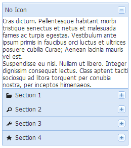

Accordion
FAccordion是一个可折叠组件，也可被叫做手风琴组件或者抽屉组件，一次只能打开一个抽屉。

依赖组件
适用范围
一般用作主页面左边的导航栏的第一级菜单，内嵌tree使用
约束
- 不提供动态增加、删除抽屉的API；
- 最多同时只能打开一个抽屉，即打开一个抽屉，另一个抽屉自动被关闭；
- 不提供ajax装载抽屉内容的方式；
注意事项
- 虽然FAccordion提供了setSize方法改变大小，但是不建议实现为跟随浏览器窗口变化自适应布局；建议在页面首次展现时计算一次大小，后续FAccordion的高度不要跟随浏览器的高度自适应；
- 默认情况下，FAccordion各个抽屉包括第一次展现不显示抽屉的内容，都会在页面第一次展现时生成，内部的脚本也会执行。
使用示例
基于Jsp标签创建FAccordion实例：
内嵌树，需要特别注意的是，内嵌树的width、height属性必须设置为"auto"，否则会出现不该出现的滚动条：
响应展开和收缩事件：